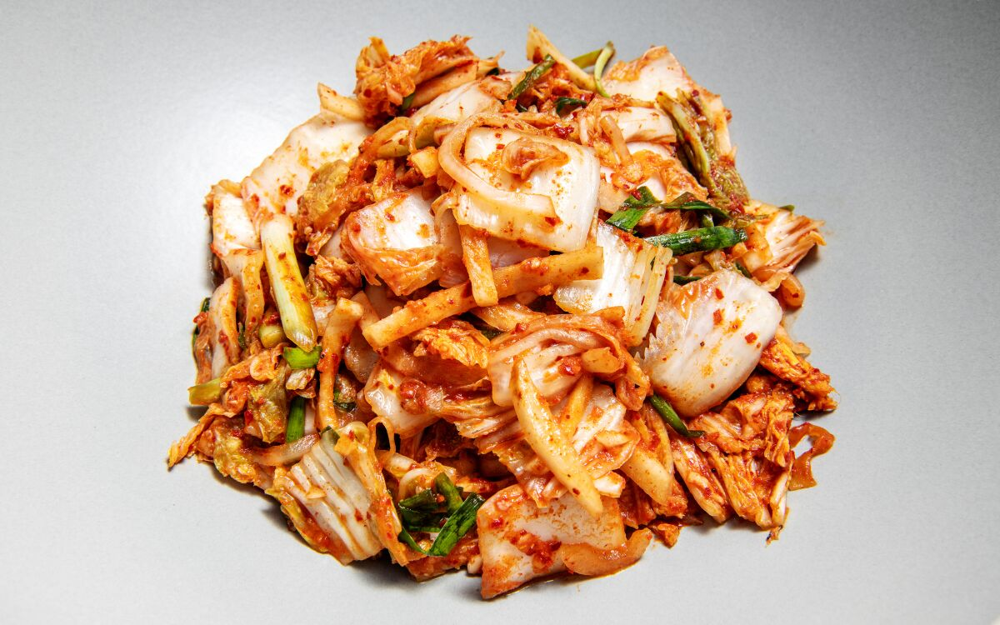

Kimchi

Description
Kimchi is a delicious, traditional Korean dish that can either be enjoyed on it's own, or in harmony with other dishes. It is relatively simple to make and when done correctly, has an amazing crunch and taste that gets better over time.
Ingredients:
- 6 lbs of Napa cabbage
- 1/2 cup of Kosher salt
- 2 cups of water
- 2 tbs of sweet rice flour
- 2 tbs of brown sugar
- 1 cup of carrots, chopped
- 8 scallions, chopped
- 1 Asian chive, chopped
- 1/2 cup of garlic cloves, minced
- 2 tsp of ginger, minced
- 1 onion, minced
- 1/2 cup of fish sauce
- 1/4 cup of fermented salted shrimp, chopped
- 2 cups of red pepper flakes
- Food-handling gloves (optional)
- Glass jar or plastic container (WARNING: may stain or leave odor from fermentation!)
Steps:
The Cabbages
- Prepare and salt the cabbage. Cut the cabbage in half vertically with a knife and gently open up in between the leaves, keeping the core intact.
- Dunk the halves in a large basin of water and generously sprinkle salt inside and between each leaf.
- Let the cabbages sit for two hours. Turn over every 30 minutes.
- While letting the cabbages sit, prepare the marinade.
The Marinade
- Using a wooden spoon, combine and mix the water and sweet rice flour in a small pot over medium heat. Do so for about 10 minutes until it starts to bubble.
- Stir in sugar and cook for one more minute before removing from heat.
- Let cool. Poor cooled mixture into a large mixing bowl.
- Add garlic, ginger, onion, fish sauce, fermented salted shrimp, and red pepper flakes. Mix until a thin paste is formed.
- Add and mix the carrots, scallions, and asian chives.
The Kimchi
- After the cabbages sit for two hours, cut off their cores and wash them thoroughly under cold running water. Place them in a strainer so they can drain.
- In a large bowl, use your hands (with food-handling gloves) to spread your marinade on each cabbage leaf.
- After each leaf is thoroughly marinated, place them into your glass jar or plastic container.
- Enjoy immediately or let it ferment!
Fermentation Notes
- The kimchi will ferment within a day or two in room temperature, depending on the humidity and exact temperature. The warmer and more humid it is, the faster it will ferment.
- If using a sealed jar, make sure to open it periodically to let it breathe and press down on top of the kimchi.
- Once fermentation has begun, store the kimchi into the refrigerator. This will slow down the fermentation.
- The more fermented the kimchi, the more sour and strong the flavor gets.